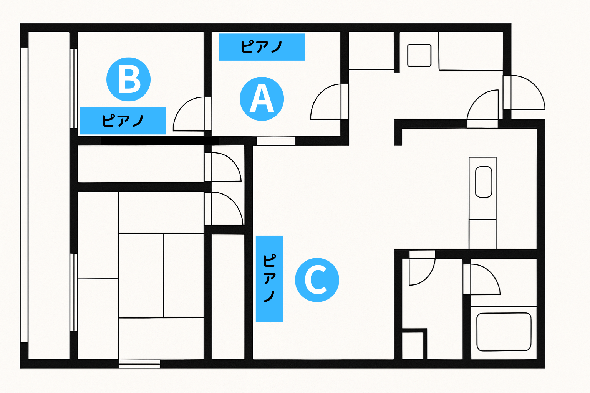

こんなお悩み、よくお聞きします
「鍵盤が上がらなくなっちゃったの…」
湿気によるトラブル、固着
「ピアノを弾いていたら
“お隣からうるさい”って苦情が…」
騒音トラブル
「大事に使っているのに、
金属部分にサビがまわってきた…」
温度湿度の影響による劣化
「引越したら急に音が悪くなった気がする…」
設置環境の急な変化
実は“置き場所”を変えるだけで、
これらが解消できるかも
これらのトラブルは“置き場所”を整えるだけで防げることが多いです。
大切なピアノの寿命も弾き心地もガラッと変わるポイントをお伝えします。
ここを押さえましょう！
ピアノの“置き場所”
ここだけは必ずチェック！
床の状態とインシュレーター

- 床は水平で安定しているか確認しましょう。
- 専用の敷物（インシュレーター）を脚下に敷き、振動を軽減し、床へのダメージを防ぎます。
壁から10～15cmほど離しましょう

適度な距離で音の響きと空気循環を確保
- 壁にべったり設置すると、湿度や温度がこもりやすく、
ピアノの木材に悪影響を与えます。 - 適度に空気が流れることで、音が良く鳴り、
カビの発生も防ぎます。
直射日光は大敵！カーテン越しの柔らかい光を選ぶ

- ガラス越しの直射日光は、ピアノの木部や塗装を急速に劣化させます。
- 日差しが強い場合は、**厚手のカーテン**や遮光カーテンを活用し、直接光が当たらないようにしましょう。
午後の強い西日には特に要注意！
湿度は40～60％をキープ
| 時期 | 推奨温度 | 推奨湿度 |
|---|---|---|
| 冬 | 10～20℃ | 35～65% |
| 夏 | 20～30℃ | 40～70% |
- 極端な乾燥や過度な湿気は、木部や金属部に深刻な悪影響を与えます。
- 季節ごとの推奨温度・湿度帯を意識し、必要に応じて加湿器・除湿器を設置しましょう。
- エアコンや暖房機器、除湿機の風が直接当たらないよう注意してください。
家屋構造・床材、それぞれの注意点

- 和室に設置しても問題ありません。ヤマハ敷板 UPFB（別売）を敷いて設置してください。敷板は、畳など軟らかい材質の上に設置する際に、アップライトピアノの前後の重量バランスを取り、床に対してピアノの加重のかかる面積を広げることで、一ヶ所への集中的な加重を分散させるために使用します。
- **コンクリート床:** 断熱材の有無を確認し、防音マットや防湿シートの検討も重要です。
- **床下の湿気対策:** 換気口の確保や除湿剤の使用など、湿気が溜まりやすい場所での対策も考えましょう。
実際の部屋ではこんな風に配置します

ピアノは背面に音が大きく出ます。外壁向きのＡより、Ｂ、Ｃの方が近隣への音の問題を軽減できます。
導入事例：実際に設置してみたら…
BEFORE

壁にぴったりと設置されており、直射日光が当たる場所。鍵盤の動きが鈍り、音がこもりがちでした。
AFTER

インシュレーター装着、壁から適切な距離を確保。驚くほど音がクリアになり、調律も安定しやすくなりました。
Q&A：お客様からよくいただく質問
壁から5cmしか離せないけど大丈夫？
最低限の空間確保は重要ですが、どうしても難しい場合はご相談ください。ピアノにとってベターな方法をご一緒に考えます。
フローリングの上にそのまま置いてOK？
床のために、インシュレーター等の敷物使用を強く推奨します。防音や防振用のインシュレーターもございます。
マンションでピアノを弾くときの対策は？
防音マットや厚手のカーテン、防音パネルの設置が効果的です。また、練習時間帯の配慮も大切です。必要に応じて加湿器・除湿器もご検討ください。
換気はした方が良いの？
お天気の良い日は風通しよく、雨の日は窓を閉めた方が良いです。人間が過ごしやすい環境がピアノにとっても過ごしやすいのです。
引っ越し後、すぐに調律した方がいい？
引っ越しや環境変化後は、木材の伸縮により音程が狂いやすくなります。移動毎に調律することをおすすめします。